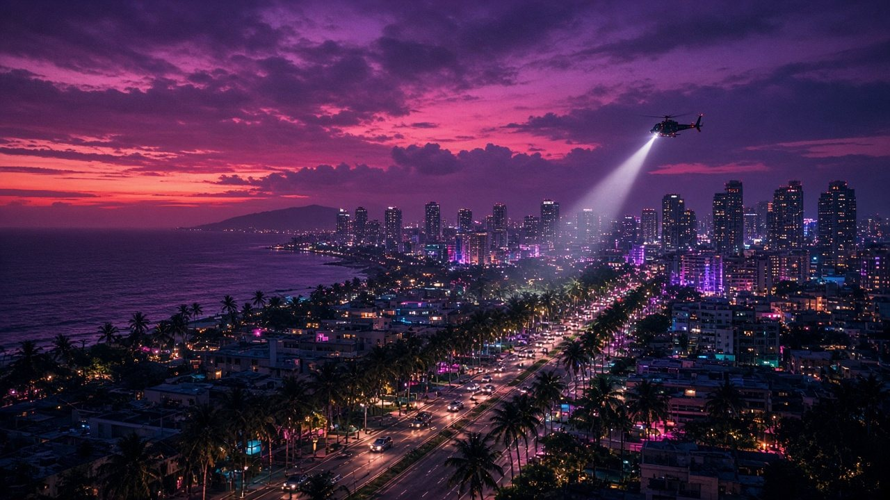
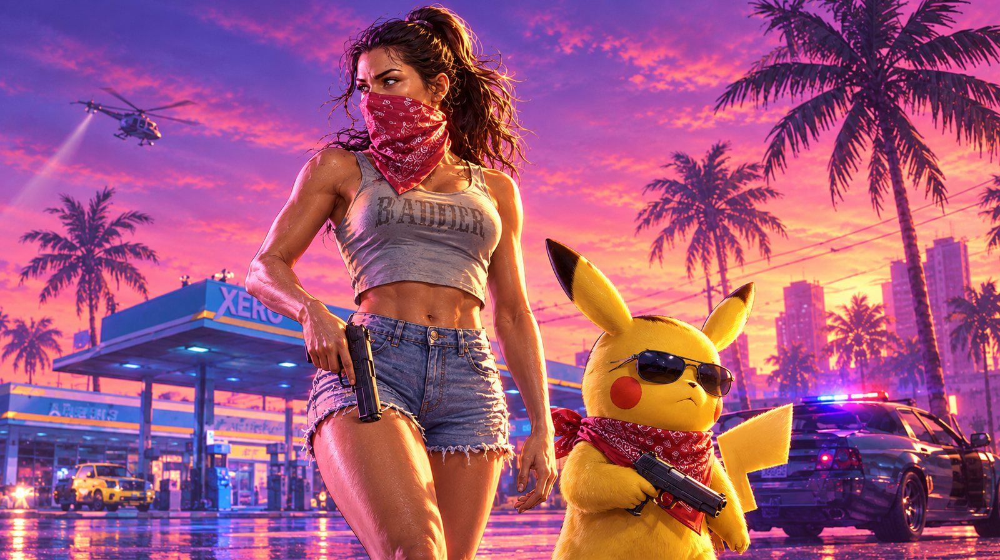
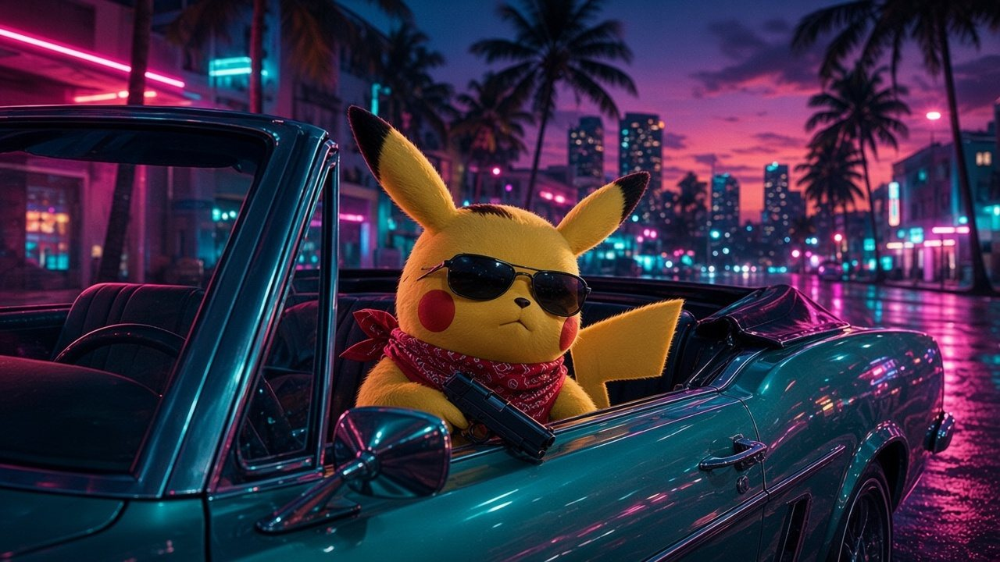
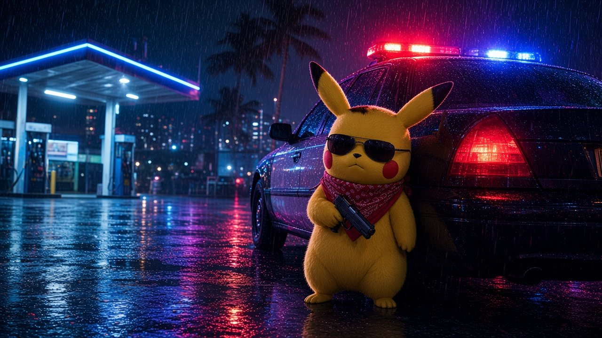
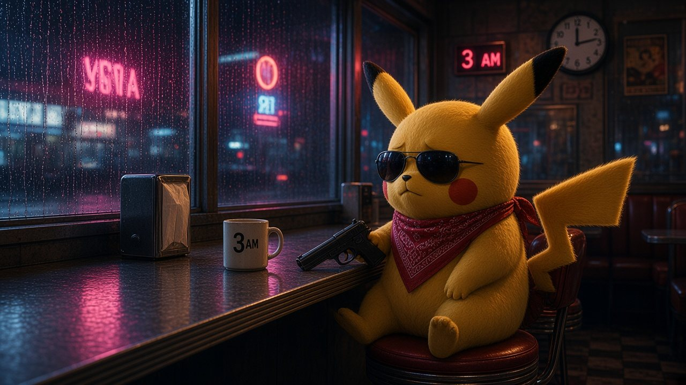
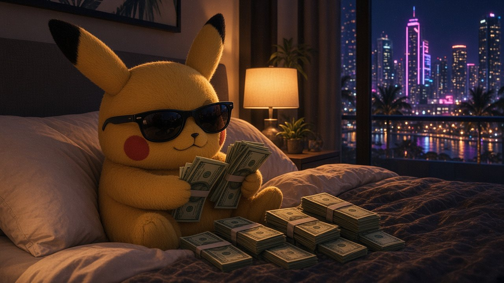
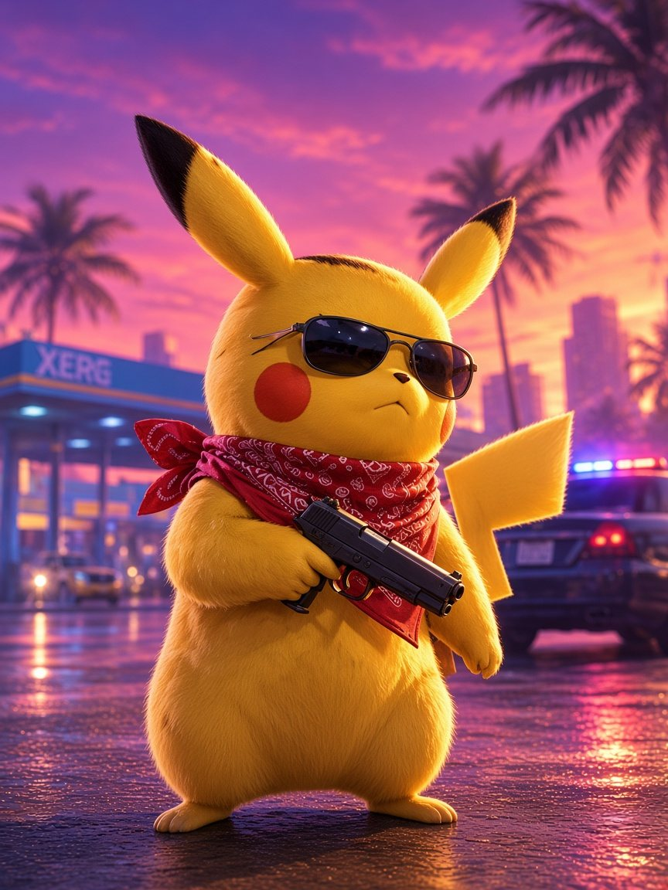

E01Pilot: Voltage
58 minThe night a helicopter light finds the wrong rooftop, the whole city wakes up hungry.

Season 1

E01The night a helicopter light finds the wrong rooftop, the whole city wakes up hungry.

E02A borrowed convertible, a stolen sunrise, and a deal that was never meant to close.

E03Rain on the cruiser. Static on the radio. Someone in this city is wearing a red bandana.

E04Every secret in Pokécity ends up in the same booth, under the same flickering sign.

E05The money is on the bed. The question is who's going to sleep tonight.
The quietest room in the city. The loudest finale of the season.
Starring

The Spark
Small, yellow and impossible to ignore. Nobody knows where he came from. Everybody knows when he arrives.
The Getaway
She sleeps with the window open so she can hear the sirens coming. Lately they've been coming for her.
The City
Palm trees, wet asphalt, a sunset that never really ends. The city isn't the setting. It's the antagonist.
“Electric. I haven't blinked since episode one.”
— The Neon Ledger (not a real paper)
“Ten out of ten sunglasses.”
— Night Shift Gazette, probably
“The most dangerous yellow on television.”
— Some Guy at the 3 A.M. Diner
“I watched it twice. Then I watched the trailer again.”
— Vice Shore Weekly (fictional)
Reviews are playful fiction. No real publications were harmed.
Synopsis
In a sun-bleached coastal city where the nights glow purple and the rain never cools anything down, a getaway driver named Marisol picks up a passenger she can't explain: a small, yellow stranger in sunglasses with a red bandana and a very short fuse.
One spark sets the city off. Now the cops, the crews and the 3 A.M. regulars all want the same thing, and there's only one road out of town.
Follow the series